All 78 cards, explored.
Browse the Major and Minor Arcana. Each card includes upright and reversed meanings, with a deeper guide to its themes and reflections.
A meaning for every moment.
78 cards
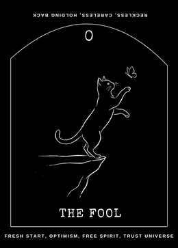
The Fool
UprightThe Fool opens a new chapter with curiosity and room to experiment.
ReversedThe Fool can point to hesitation that keeps a genuine beginning out of reach, or to a leap taken…
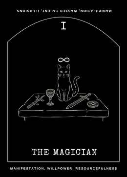
The Magician
UprightThe Magician is about turning intention into action.
ReversedThe Magician can describe scattered attention, underestimating your own abilities, or having…
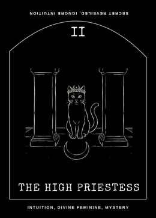
The High Priestess
UprightThe High Priestess invites attentive stillness.
ReversedThe High Priestess may suggest that inner signals are being drowned out, or that uncertainty is being…
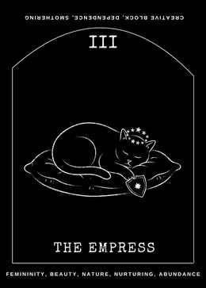
The Empress
UprightThe Empress speaks to growth supported by care.
ReversedThe Empress can point to creative depletion, neglect of your own needs, or care that has become…

The Emperor
UprightThe Emperor brings attention to structure, responsibility, and the boundaries that make sustained…
ReversedThe Emperor may show rigidity, overcontrol, or a structure that no longer serves the people inside it.
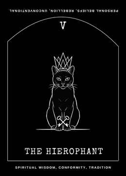
The Hierophant
UprightThe Hierophant concerns learning within a tradition, community, or trusted system of knowledge.
ReversedThe Hierophant may reflect pressure to conform, beliefs accepted without examination, or the need to…
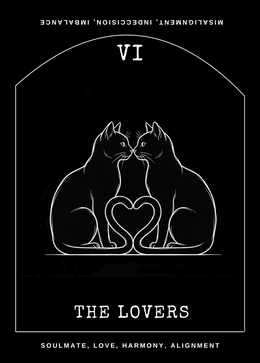
The Lovers
UprightThe Lovers represents meaningful connection and the choices that shape it.
ReversedThe Lovers may show distance, unresolved tension, unequal commitment, or a choice made against your…
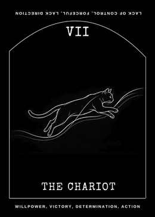
The Chariot
UprightThe Chariot is purposeful movement through competing pressures.
ReversedThe Chariot may signal scattered effort, a lost sense of direction, or momentum driven by urgency…
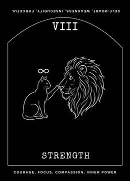
Strength
UprightStrength describes courage expressed through patience and compassion.
ReversedStrength can reflect self-doubt, depleted patience, or reacting more harshly than you intend.
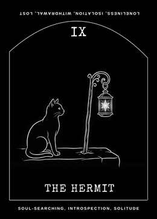
The Hermit
UprightThe Hermit marks a useful retreat for reflection.
ReversedThe Hermit can point to isolation that has lasted too long, or to avoiding a necessary inner question…
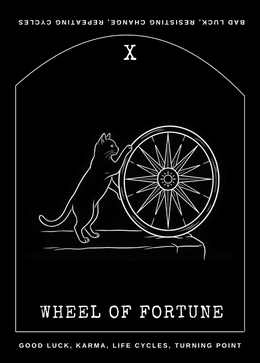
Wheel of Fortune
UprightThe Wheel of Fortune reflects changing conditions and the cycles that shape a situation.
ReversedThe Wheel may describe resistance to a change already underway, repeating a pattern without examining…
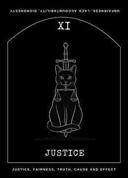
Justice
UprightJustice asks for clear-eyed honesty, fair process, and accountability.
ReversedJustice may highlight an unfair arrangement, incomplete information, or the temptation to avoid…
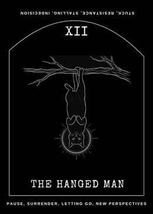
The Hanged Man
UprightThe Hanged Man suggests a pause that can change how a problem is seen.
ReversedThe Hanged Man can signal being stuck in a pause that has lost its purpose, resisting a perspective…
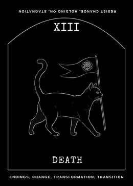
Death
UprightDeath represents an ending or transformation, not a literal prediction of death.
ReversedDeath may reflect clinging to a phase that has ended, postponing a necessary transition, or fearing…
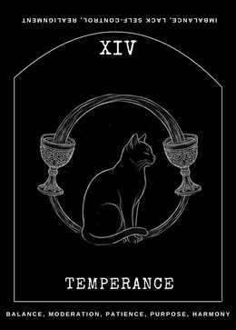
Temperance
UprightTemperance is the art of bringing different needs into workable relationship.
ReversedTemperance can point to excess, impatience, or parts of life that are not being given compatible…
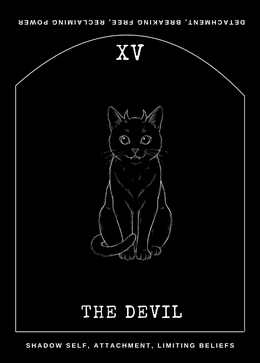
The Devil
UprightThe Devil brings awareness to attachments and patterns that can make freedom feel smaller: a habit…
ReversedThe Devil may describe recognizing a restrictive pattern and beginning to loosen its hold, or…
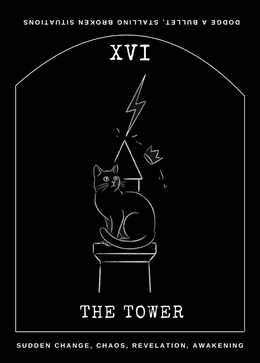
The Tower
UprightThe Tower depicts disruption that exposes a structure that could not safely remain as it was.
ReversedThe Tower may show bracing for a change, delaying an overdue conversation, or trying to preserve…
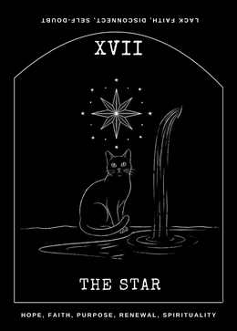
The Star
UprightThe Star offers a quieter kind of hope: recovery, renewed perspective, and the willingness to imagine…
ReversedThe Star may reflect discouragement, exhaustion, or difficulty believing that care will make a difference.
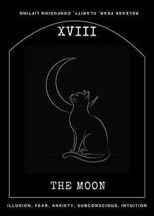
The Moon
UprightThe Moon describes a passage through uncertainty, where feelings and imagination can be vivid while…
ReversedThe Moon can mark fears beginning to loosen, confusion coming into view, or anxiety becoming…
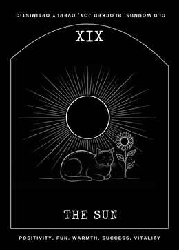
The Sun
UprightThe Sun brings warmth, visibility, and the pleasure of being able to understand where you stand.
ReversedThe Sun may describe muted joy, confidence that needs grounding, or a good development obscured by…
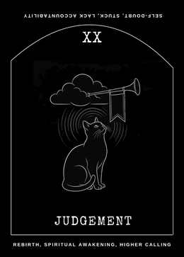
Judgement
UprightJudgement invites an honest review of the past so that it can inform, rather than dictate, your next…
ReversedJudgement may reflect harsh self-criticism, fear of being evaluated, or delaying a decision because…
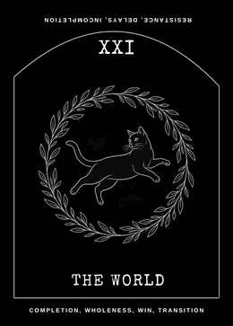
The World
UprightThe World marks a cycle reaching meaningful completion.
ReversedThe World may point to unfinished business, a delayed milestone, or difficulty allowing yourself to…
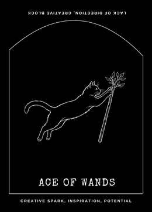
Ace of Wands
UprightThe Ace of Wands is a spark of creative or personal energy: a new idea, attraction, invitation, or…
ReversedThe spark may be delayed, scattered, or difficult to trust.
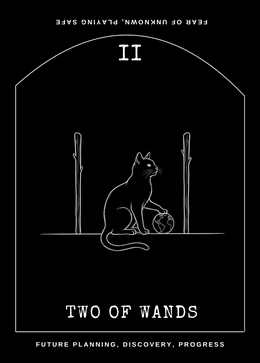
Two of Wands
UprightThe Two of Wands is the moment after an idea becomes possible and before a direction is chosen.
ReversedThe Two of Wands may indicate hesitation, a plan that remains abstract, or fear of leaving a known…
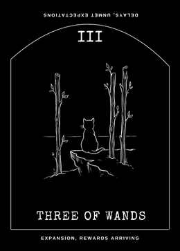
Three of Wands
UprightThe Three of Wands looks outward as early efforts begin to create room for expansion.
ReversedThe Three of Wands may reflect delays, constrained plans, or disappointment that growth is taking…
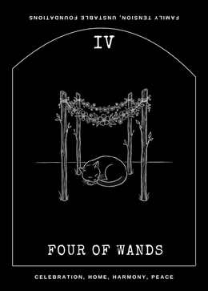
Four of Wands
UprightThe Four of Wands celebrates a milestone, shared effort, or place where you can feel welcome.
ReversedThe Four of Wands may point to a celebration delayed, tension around belonging, or a home or group…
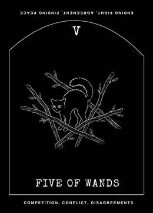
Five of Wands
UprightThe Five of Wands brings competing ideas, energetic disagreement, or a test of how people work together.
ReversedThe Five of Wands can indicate conflict being avoided, competition becoming exhausting, or a group…
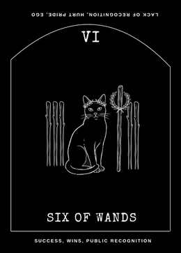
Six of Wands
UprightThe Six of Wands marks visible progress, acknowledgement, or confidence earned through effort.
ReversedThe Six of Wands may reflect recognition that has not arrived, confidence shaken by comparison, or a…
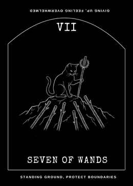
Seven of Wands
UprightThe Seven of Wands asks you to protect a position, boundary, or hard-won progress when it is being…
ReversedThe Seven of Wands may suggest feeling outnumbered, worn down by constant defence, or defending a…
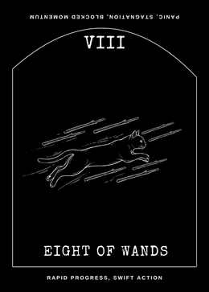
Eight of Wands
UprightThe Eight of Wands is swift movement: news, ideas, or plans arriving in quick succession.
ReversedThe Eight of Wands may signal delays, crossed messages, or too many things moving at once.
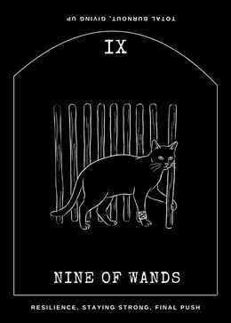
Nine of Wands
UprightThe Nine of Wands reflects resilience after repeated effort.
ReversedThe Nine of Wands may show exhaustion, defensiveness, or difficulty trusting after a demanding stretch.
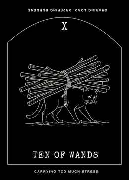
Ten of Wands
UprightThe Ten of Wands depicts a heavy load: many responsibilities may be close to completion, but their…
ReversedThe Ten of Wands may indicate reaching a limit, setting a burden down, or continuing to carry…
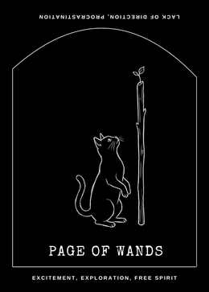
Page of Wands
UprightThe Page of Wands brings the enthusiasm of discovery: a message, invitation, or idea that awakens…
ReversedThe Page of Wands may describe enthusiasm that is difficult to sustain, an idea that has not been…
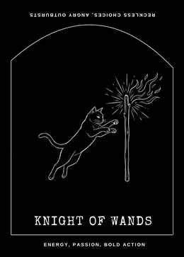
Knight of Wands
UprightThe Knight of Wands moves with boldness, initiative, and appetite for adventure.
ReversedThe Knight of Wands may suggest impulsive action, unreliable follow-through, or energy that burns hot…
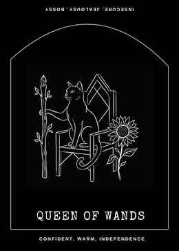
Queen of Wands
UprightThe Queen of Wands embodies warm confidence, expressive creativity, and the ability to encourage…
ReversedThe Queen of Wands may point to self-doubt hidden behind performance, jealousy, or giving…
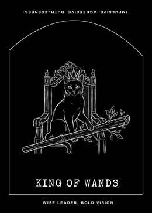
King of Wands
UprightThe King of Wands turns vision into leadership and sustained direction.
ReversedThe King of Wands may reflect overconfidence, impatience with other people's pace, or a compelling…

Ace of Cups
UprightThe Ace of Cups offers an emotional opening: affection, creativity, compassion, or a renewed capacity…
ReversedThe Ace of Cups may indicate feelings held back, emotional depletion, or a beginning that needs more…
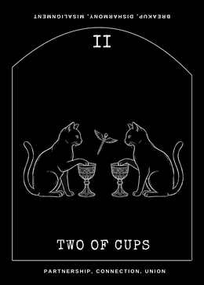
Two of Cups
UprightThe Two of Cups centres mutual recognition: two people, ideas, or parts of yourself meeting with respect.
ReversedThe Two of Cups can reflect misunderstanding, uneven effort, or a connection that needs an honest…
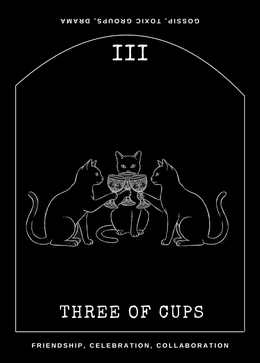
Three of Cups
UprightThe Three of Cups celebrates friendship, shared joy, and the emotional nourishment of community.
ReversedThe Three of Cups may point to social exhaustion, feeling left out, or group dynamics that do not…
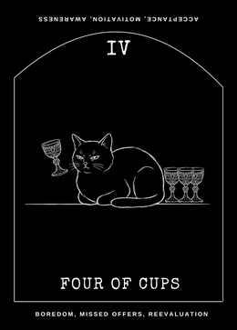
Four of Cups
UprightThe Four of Cups brings a pause in which dissatisfaction or emotional fatigue deserves attention.
ReversedThe Four of Cups may mark renewed interest after withdrawal, or restlessness that makes every option…
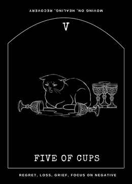
Five of Cups
UprightThe Five of Cups honours grief and disappointment without pretending they are small.
ReversedThe Five of Cups can suggest the gradual easing of grief, readiness to accept support, or difficulty…
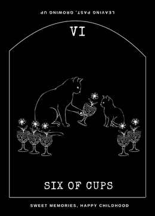
Six of Cups
UprightThe Six of Cups returns to memory, tenderness, and the influence of earlier experiences.
ReversedThe Six of Cups may indicate being stuck in an idealized past, or becoming ready to loosen its hold…
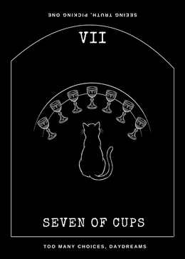
Seven of Cups
UprightThe Seven of Cups presents a field of possibilities, fantasies, and choices.
ReversedThe Seven of Cups may signal confusion beginning to clear, or a choice being made without enough…
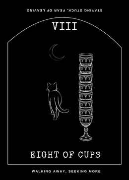
Eight of Cups
UprightThe Eight of Cups shows a decision to leave what no longer feels emotionally sufficient, even when it…
ReversedThe Eight of Cups may reveal fear of leaving, a return to a situation you thought was finished, or…
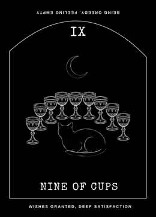
Nine of Cups
UprightThe Nine of Cups celebrates satisfaction, pleasure, and a wish that may be taking shape.
ReversedThe Nine of Cups may point to satisfaction that does not last, overindulgence, or a goal chosen…
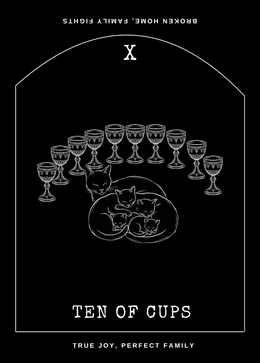
Ten of Cups
UprightThe Ten of Cups imagines emotional fulfilment as something shared: belonging, care, and relationships…
ReversedThe Ten of Cups may reveal tension beneath an idealized picture of harmony, distance within a family…
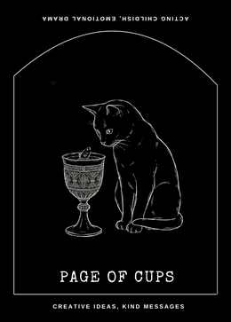
Page of Cups
UprightThe Page of Cups brings emotional curiosity, imaginative attention, and the possibility of a gentle…
ReversedThe Page of Cups may indicate emotional hesitancy, daydreaming in place of communication, or feelings…
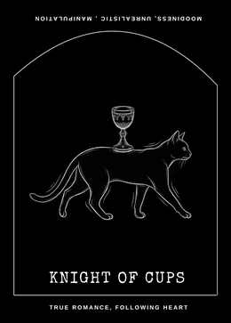
Knight of Cups
UprightThe Knight of Cups follows an emotional invitation with charm, imagination, and a desire to connect.
ReversedThe Knight of Cups may describe mixed signals, idealising someone, or pursuing a feeling without…
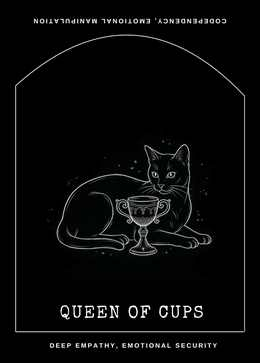
Queen of Cups
UprightThe Queen of Cups brings empathy and emotional insight while reminding you that compassion needs…
ReversedThe Queen of Cups may reflect emotional overwhelm, blurred boundaries, or care that has become…
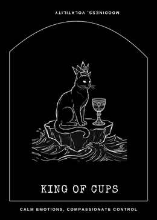
King of Cups
UprightThe King of Cups represents emotional steadiness: the ability to feel deeply while responding with…
ReversedThe King of Cups may signal feelings contained until they spill over, emotional distance, or…
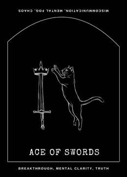
Ace of Swords
UprightThe Ace of Swords cuts through confusion with a clear idea, conversation, or decision.
ReversedThe Ace of Swords can point to confusion, an untested assumption, or communication that has become…
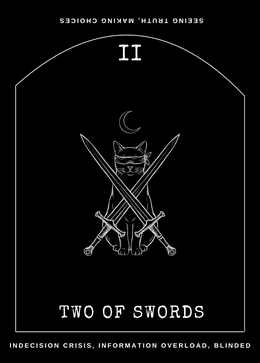
Two of Swords
UprightThe Two of Swords reflects a decision held in balance while competing needs are considered.
ReversedThe Two of Swords may describe indecision becoming stressful, information being avoided, or a…
Three of Swords
UprightThe Three of Swords acknowledges pain caused by disappointment, separation, or a truth that hurts to face.
ReversedThe Three of Swords may mark the beginning of emotional repair, old pain resurfacing, or a wish to…
Four of Swords
UprightThe Four of Swords calls for recovery and deliberate mental quiet.
ReversedThe Four of Swords may suggest rest interrupted by worry, recovery postponed too long, or isolation…
Five of Swords
UprightThe Five of Swords examines conflict and its cost.
ReversedThe Five of Swords may show regret after conflict, a possibility of repair, or a harmful dynamic that…
Six of Swords
UprightThe Six of Swords depicts movement away from a difficult mental or emotional climate toward calmer ground.
ReversedThe Six of Swords may reflect difficulty leaving a painful situation, delays in transition, or old…
Seven of Swords
UprightThe Seven of Swords concerns strategy, discretion, and choices made outside the full view of others.
ReversedThe Seven of Swords may point to a hidden issue coming to light, a plan needing revision, or guilt…
Eight of Swords
UprightThe Eight of Swords depicts feeling constrained by fear, assumptions, or circumstances that make…
ReversedThe Eight of Swords may mark a growing awareness of options, or fear that continues to restrict…
Nine of Swords
UprightThe Nine of Swords gives form to worry, guilt, or thoughts that become louder in solitude.
ReversedThe Nine of Swords may show anxiety easing, or distress being kept hidden until it feels heavier.
Ten of Swords
UprightThe Ten of Swords marks a painful ending, mental exhaustion, or the recognition that a situation has…
ReversedThe Ten of Swords may point to recovery after a difficult ending, fear of another blow, or keeping a…
Page of Swords
UprightThe Page of Swords brings curiosity, observation, and a willingness to ask sharper questions.
ReversedThe Page of Swords may suggest scattered research, miscommunication, or words sent before their…
Knight of Swords
UprightThe Knight of Swords moves quickly toward an idea, challenge, or conversation.
ReversedThe Knight of Swords can describe impulsive words, a plan driven by anger, or momentum that leaves…
Queen of Swords
UprightThe Queen of Swords values discernment, honest language, and boundaries informed by experience.
ReversedThe Queen of Swords may indicate words made cutting by hurt, excessive suspicion, or a boundary…
King of Swords
UprightThe King of Swords brings strategic thought, clear standards, and decisions supported by evidence.
ReversedThe King of Swords may signal rigid judgment, analysis used to avoid emotion, or authority exercised…
Ace of Pentacles
UprightThe Ace of Pentacles offers a practical beginning: a resource, skill, job, health habit, or financial…
ReversedThe Ace of Pentacles may point to a delayed opportunity, shaky foundations, or practical details that…
Two of Pentacles
UprightThe Two of Pentacles concerns the everyday work of balancing changing demands.
ReversedThe Two of Pentacles may reveal overload, disorganisation, or a balance that depends on you…
Three of Pentacles
UprightThe Three of Pentacles values skilled work, collaboration, and the details that turn an idea into…
ReversedThe Three of Pentacles may indicate poor coordination, work that goes unrecognised, or a project…
Four of Pentacles
UprightThe Four of Pentacles focuses on protecting resources and seeking security.
ReversedThe Four of Pentacles may suggest loosening a grip, reconsidering a scarcity mindset, or feeling…
Five of Pentacles
UprightThe Five of Pentacles acknowledges material strain, insecurity, or the pain of feeling left out.
ReversedThe Five of Pentacles may describe the first signs of recovery, openness to help, or ongoing hardship…
Six of Pentacles
UprightThe Six of Pentacles explores giving and receiving resources, time, or influence.
ReversedThe Six of Pentacles may point to unequal exchange, support offered with strings attached, or…
Seven of Pentacles
UprightThe Seven of Pentacles pauses to assess what sustained effort is producing.
ReversedThe Seven of Pentacles may suggest frustration with slow results, impatience, or continued investment…
Eight of Pentacles
UprightThe Eight of Pentacles is the discipline of building skill through repetition and attention.
ReversedThe Eight of Pentacles may point to perfectionism, disengagement, or effort repeated without learning.
Nine of Pentacles
UprightThe Nine of Pentacles reflects independence, earned comfort, and the satisfaction of being able to…
ReversedThe Nine of Pentacles may suggest financial dependence, insecurity beneath appearances, or difficulty…
Ten of Pentacles
UprightThe Ten of Pentacles looks at long-term security, shared resources, family patterns, and the…
ReversedThe Ten of Pentacles may reveal tension around family resources, inherited expectations, or a…
Page of Pentacles
UprightThe Page of Pentacles approaches a practical opportunity as a learner.
ReversedThe Page of Pentacles may indicate procrastination, a plan that lacks practical follow-through, or…
Knight of Pentacles
UprightThe Knight of Pentacles brings reliability, patience, and attention to the work that sustains a goal.
ReversedThe Knight of Pentacles may point to stagnation, routine without purpose, or resistance to any adjustment.
Queen of Pentacles
UprightThe Queen of Pentacles combines practical competence with warmth.
ReversedThe Queen of Pentacles may show overwork, neglecting your own needs while tending everyone else's, or…
King of Pentacles
UprightThe King of Pentacles represents stewardship: managing resources and responsibilities with patience…
ReversedThe King of Pentacles may reflect materialism, inflexible control, or security pursued at the expense…
No cards match that search. Try another name or keyword.
Tarot meanings are interpretive prompts, not fixed predictions. Consider the card alongside your own question and circumstances.